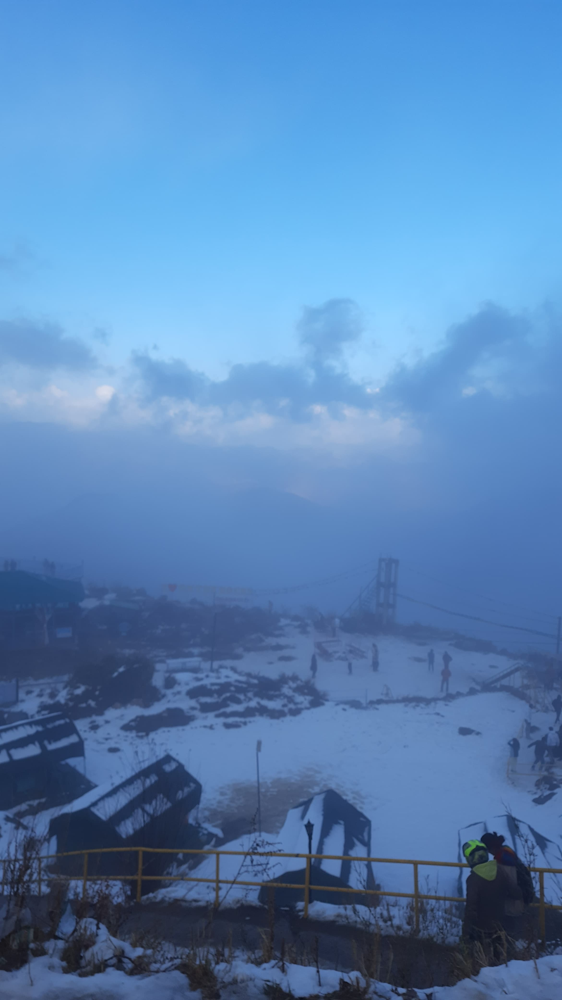

- 
Dhanaulti
At 2286 meters above sea level, Dhanaulti is a peaceful hill station with expansive views of the towering Himalayas. Located 30 miles from the hill station of Mussoorie and 40 km (25 mi) from New Tehri, the district headquarters, this location is nestled in the foothills of the Garhwal Himalayan range. In Uttarakhand, India's Tehri Garhwal district, there is a tehsil called Dhanaulti. Dhanaulti lies along the popular tourist route that passes through Landour, Mussoorie, Kanatal, Chamba, and New Tehri. Thick woods of lofty oaks, deodar, and velvet rhododendron envelop the town. Wintertime heavy snowfall brings lots of tourists to this area. Dhanaulti offers the kind of vacation seclusion that many desire because it hasn't been affected by the enormous summer rush to hill locations. Since Mussoorie has grown too congested, many tourists prefer Dhanaulti. Dhanaulti is also an up and coming Honeymoon destination.The town experiences summer temperatures between 20 and 25 degrees Celsius, and winter temperatures stay between 7 and -1 degrees Celsius.
Two eco-parks, "Amber" and "Dhara," are located in a section of Dhanaulti, roughly 200 meters apart. The Uttarakhand Forest Department is the one who created them. It has a tiny, protected woodland with deodar trees in it. Visitors can experience the adventure sports facilities by riding horses and walking over the Burma and Flying Fox bridges. Additionally, there is a facility known as the Memory Sapling Plantation where guests can plant a sapling of a particular tree species in remembrance of their lover. The Mussoorie Forest Department hosts tourist eco-huts.
- Surkanda Devi Temple: Located on the road towards Chamba, 8 km (5.0 mi) from Dhanaulti, this temple is well-known for its autumnal Ganga Dussehra celebrations. As a component of the Devi Darshan triangle, which includes Kunjapuri, Chandrabadni, and Surkanda Devi in the Dhanaulti area, it provides hiking options.
- Sky Walk: Traverse a 360-foot single-wire rope at a height of 120 feet above the ground.
- Sky Bridging: Climb to an elevation of 80 feet to cross the 300-foot-long longest hanging bridge in India, which is constructed of wire ropes and bamboos.
- Ziplining is a thrilling activity where participants zip down a wire rope before swinging 80 feet up from the middle. Experience the thrill of riding an all-terrain vehicle (ATV) or quad bike up and down the Himalayan slopes.